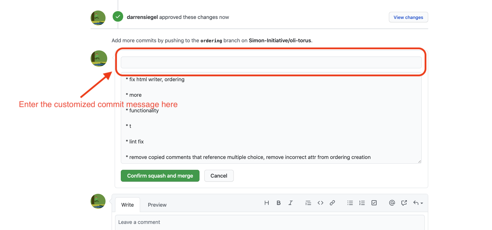

View Source Changelog processes
feature-development-bug-fixing
Feature development / bug fixing
- Developer performs feature work or bug fix on a branch off of
master. - Developer opens a pull request against
masteronce the work is completed. The PR should include a change toCHANGELOG.mdsummarizing the work. - Reviewer reviews the PR and either requests changes or approves.
- After approval, the reviewer squashes and merges to master, updating the commit message to summarize the entirety of the work item. This aggregate commit message must be prefixed with the change type, a description, and a reference to the pull request number. For example,
[BUG FIX] A description #123 CMU-30or[FEATURE] Another description #231 CMU-30. It should also include a reference to the Argos JIRA ticket number.
valid-change-types
Valid Change Types
[FEATURE]: New feature for the user[BUG FIX]: Bug fix for an existing feature[DOCS]: Changes purely to documentation[REFACTOR]: Refactoring of code, no changes in functionality[CHORE]: Updating of build infrastructure, deployment automation, etc.[PERF]: Changes that target a performance improvement[ENHANCEMENT]: Small improvements to existing features

release
Release
- Developer opens a PR against
masterto update the version inmix.exsand to update the release date withinCHANGELOG.md. - PR lands to
masterwith a commit message of[RELEASE] x.y.zwith the appropriate version number. - A Github Release is created with the Tag version and Release title formatted as
vx.y.z(e.g.v1.0.0) and the corresponding list of Enhancements and Features as well as any other relevant information for the release copied fromCHANGELOG.mdinto the description. - A PR is opened to merge
mastertotest, after it builds and merged any required testing is done ontokamak.oli.cmu.edu - A PR is opened to merge
mastertoprod. After it builds it is merged to trigger the deployment to production.
examples
Examples
The following is an example of what the above guidelines yield in the commit history on master:
[RELEASE] v0.4.1
[BUG FIX] Restored ability to sort media items by size #324
[BUG FIX] Corrected position of image thumbnails within media library #345
[FEATURE] Added new Ordering activity type #346